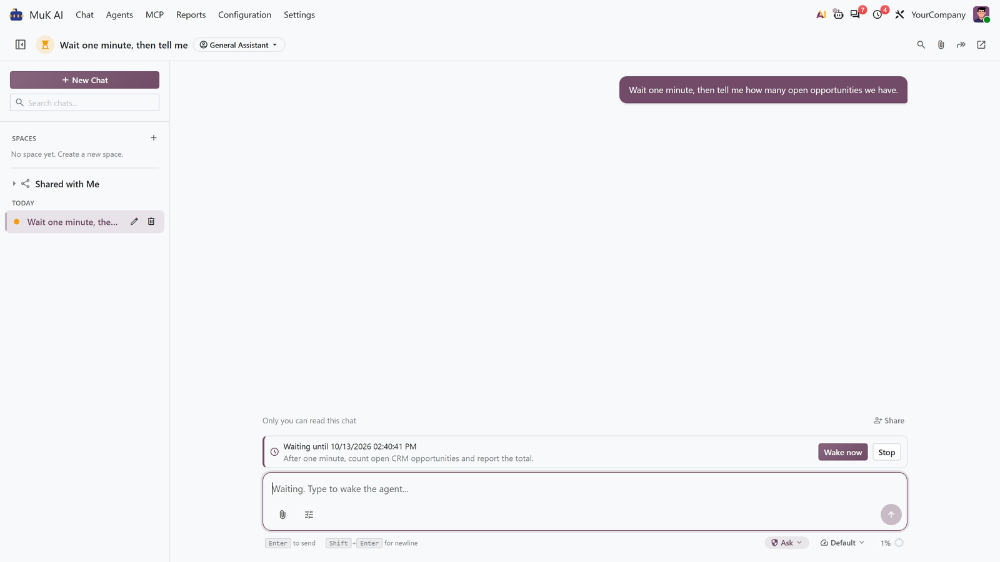
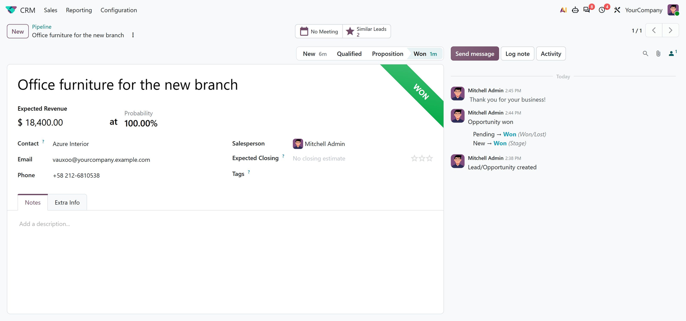
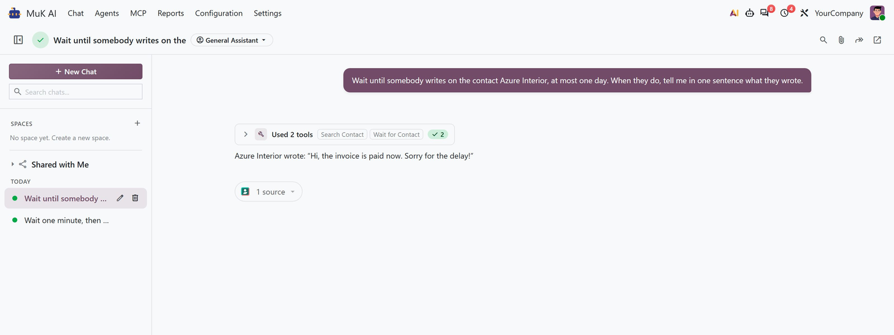
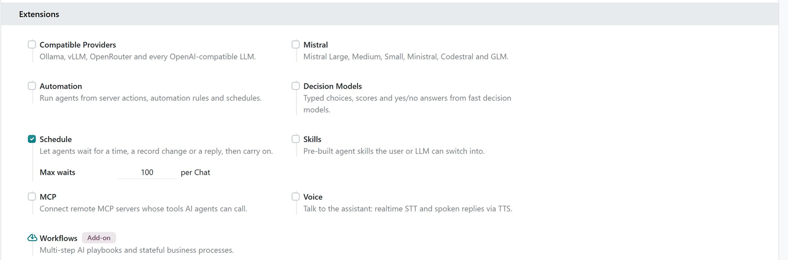

Every MuK AI chat gets a wait tool. The agent pauses until a time, until a record reaches a state or until somebody replies on a record, and picks the task up again with the note it left itself, without anybody watching.
"Check again in an hour" or "send the reminder Monday at nine", up to thirty days ahead.
Wake when an invoice is paid or a lead is won. The condition is checked every minute, without calling the model.
Wake when a message or an email is posted on the record, and read it in the result.

The agent decides when a task needs a pause and how long it may take. When the chat wakes, the agent learns why and goes on from there.
Every wait carries a note, so the agent knows what it was waiting for when it wakes up.
Every wait has a timeout, so a reply that never comes still wakes the agent to follow up.
On time, record ready, a message with its text, the record deleted, or woken by hand.
Wake now carries on at once, Stop ends the wait, and typing a message wakes the chat as well.
No model call while a chat waits, and a waiting chat stays out of your inbox until it has something to say.
Each chat may wait as often as the settings allow, and every wake-up runs within the usual turn limits.
Ask the agent to watch a record. It writes the condition as a domain on that record, and the chat wakes as soon as the record matches.
Here the opportunity is won, and the agent posts its thank-you note in the chatter without anybody asking again.


The agent waits for a message or an email on a record, such as the customer replying on their contact or on an invoice.
The chat wakes within seconds of the post, and the agent reads the author, the subject and the text in the result of its wait.
Ask it to check every few minutes and report each time. It waits again after every check, as often as Max waits allows, and stops when the outcome is there.
Install it and every chat offers the wait tool. In the MuK AI settings, Max waits sets how often one chat may pause itself before it has to finish.
Every wake-up runs within the turn limits set there as well, so a waiting agent never runs away with your budget.

What you get for free, and what has to be paid work.
Issues and merge requests are welcome on the public repository. They are read — but no response time is promised.
A follow-up flow built for your process, or a fix on a deadline, is paid work — quoted up front. Write to sale@mukit.at.
LGPL-3. Use it, change it, ship it inside your own work — no licence key, no database count.
Modules written for your process, on your Odoo version.
Odoo joined up with the systems you already run.
Hosting, deployment and upgrades you do not have to watch.
Your team taught the parts of Odoo they actually use.
An agreement, so an answer does not depend on who is free.
Odoo.sh or on-premise, Community or Enterprise, with MuK AI Assistant and a chat provider.
Under MuK AI › Settings, set Max waits per chat in the Limits block.
Depends on muk_ai. Install it like any other module; it needs no extra Python packages.
Ask for something that needs a pause. The agent waits for a time, a record or a reply, and the chat shows what it waits for with Wake now and Stop.
Waiting chats keep waiting through an upgrade and carry on at the same time.
MuK IT GmbH, Vienna. Author and maintainer.
Tell us where tasks wait for a reply, a payment or a date, and we will tell you how an agent takes that over. MuK IT — Austrian Odoo partner, Vienna.